  <!-- <ion-content>
    <div class="swiper-container" #swiperContainer>
      <div class="swiper-wrapper">
        <div class="swiper-slide firstSlider">
          <div class="slider-overlay">
            <div class="slider-content" *ngIf="resourceData">
              
              <h2 class="slider-title">{{resourceKeyValue("Home_unlock_effortless_committee_management")}}</h2>
              <div class="navigator">
                <ion-button class="block_btn skip-button" (click)="skipSlide()">{{resourceKeyValue("Home_btn_SKIP")}}</ion-button>
                <ion-button class="block_btn next-button" (click)="nextSlide()">{{resourceKeyValue("Home_btn_NEXT")}}</ion-button>
              </div>
            </div>
          </div>
        </div>
        <div class="swiper-slide secondSlider">
          <div class="slider-overlay">
            <div class="slider-content" *ngIf="resourceData"> 
              
              <h2 class="slider-title">{{resourceKeyValue("Home_unlock_effortless_committee_management")}}</h2>
              <div class="navigator">
                <ion-button class="block_btn skip-button" (click)="skipSlide()">{{resourceKeyValue("Home_btn_SKIP")}}</ion-button>
                <ion-button class="block_btn next-button" (click)="nextSlide()">{{resourceKeyValue("Home_btn_NEXT")}}</ion-button>
              </div>
            </div>
          </div>
        </div>
        <div class="swiper-slide thirdSlider">
          <div class="slider-overlay" *ngIf="resourceData">
            <div class="slider-content">
              
              <h2 class="slider-title">{{resourceKeyValue("Home_empower_your_team_Collaboration")}}</h2>
              <div class="navigator">
                <ion-button class="block_btn get-started-button" (click)="getStarted()">{{resourceKeyValue("Home_get_started")}}</ion-button>
              </div>
            </div>
          </div>
        </div>
      </div>
      <div class="swiper-pagination"></div>
    </div>
  </ion-content>
   -->

   <ion-header [translucent]="false" mode="ios" class="ion-no-border">
    <ion-toolbar> </ion-toolbar>
  </ion-header>
  
  <ion-content scrollY="false">
    <div style="height: 100%">
      <div class="column" style="height: 100%; background: var(--primaryColor)">
        <div style="background: var(--primaryColor); height: 250px"></div>
        <div class="pageBackBottom"></div>
      </div>
  
      <swiper-container
        #swiper
        (swiperslidechange)="slideChangeCall();"
        [autoplay]="{autoplay:true,disableOnInteraction:false,delay:3500}"
        class="swiperWrapper"
      >
        <swiper-slide *ngFor="let item of onboardingScreenList">
          <div
            class="column"
            style="margin: 0 20px; justify-content: space-between; height: 100%"
          >
            <div class="column center" style="height: 250px">
              <ion-text
                class="whiteColor24SemiBold ellipseText"
                style="-webkit-line-clamp: 1"
              >
                {{item.title}}
              </ion-text>
              <ion-text
                class="whiteColor14Medium ellipseText"
                style="
                  -webkit-line-clamp: 3;
                  margin-top: 10px;
                  text-align: center;
                "
              >
                {{item.description}}
              </ion-text>
            </div>
            <div class="center" style="flex: 1">
              
            </div>
          </div>
        </swiper-slide>
      </swiper-container>
    </div>
  
    <div
      slot="fixed"
      class="rowAlignCenter center"
      style="flex: 1; width: 100%; top: 270px"
    >
      <div
        *ngFor="let item of onboardingScreenList;let i=index"
        style="margin: 0 3px; border-radius: 10px; height: 8px"
        [style.width]="i==currentIndex?'30px':'8px'"
        [style.background]="i==currentIndex?'var(--primaryColor)':'rgba(217, 217, 217, 0.5)'"
      ></div>
    </div>
  
    <ion-text (click)="getStarted()"
      class="whiteColor16SemiBold"
      slot="fixed"
      style="right: 20px; top: 20px; z-index: 100"
    >
      Skip
    </ion-text>
  </ion-content>
  
  <ion-footer mode="ios" class="ion-no-border">
    <div
      (click)="handleButtonPress()"
      class="center"
      style="
        background: var(--whiteColor);
        padding: 15px;
        box-shadow: 0 0 6px rgba(0, 0, 0, 0.25);
      "
    >
      <ion-text class="primaryColor18SemiBold">
        {{currentIndex==2?'Get started':'Next'}}
      </ion-text>
    </div>
  </ion-footer>
  